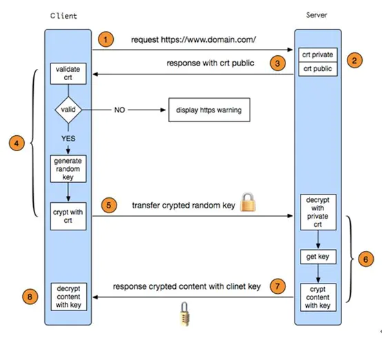

- Client和Server之间会进行一下几个步骤的交互:
- 1.client发送https请求
- 2.Client和Server通过tcp三次握手建立连接,并且协商ssl(secure socket layer)的版本、加密算法
- 3.Server发送crt证书给Client
- 4.Client通过信任机构CA的证书，验证Server证书的有效性，如果证书有效，client随机生成一个字符串，
并使用server证书的公钥对随机字符串进行加密
- 5.Client发送加密后的随机字符串给Server
- 6.Server使用自己的私钥解密，获取Client产生的随机字符串，此后，
Client和Server之间的通信数据都是用该字符串进行对称加密
- 7.Server使用随机字符串加密数据, 并发送给Client
- 8.client使用随机字符串解密数据